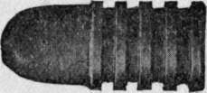
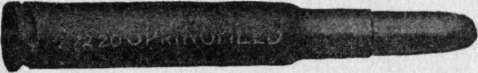
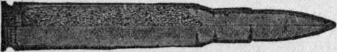

Rifles And Ammunition. Continued
Description
This section is from the "" book, by .
Rifles And Ammunition. Continued
Good marksmen never were satisfied with such ammunition as the .44-40, .38-40, .32-20, and others similarly proportioned. The demand for something more accurate and of surer killing power became insistent. It was met by a series of cartridges of radically different type, in which the bullet was of from 2j/2 to 3 calibers length, such as the .45-110-550, .45-70-405, .40-90-370.
These were the most accurate sporting cartridges produced in black powder days. Their bullets, being long and heavy, could only be driven at low speed (1,300 to 1,400 feet a second) and had high trajectories (10 to lSf/2 inches midway for two hundred yards), but they were reliable, if proper elevation was given, up to three hundred to one thousand yards. Discriminating marksmen refused to use repeating rifles until they were made strong enough to handle ammunition of this or similar type.
The one fault of the long, heavy bullet was its high trajectory. It is hard to estimate distance correctly over uneven ground, across ravines, and over the water. It is harder still to make just the right allowance for it when aiming over open 40-70-330, .38-55-255, and .32-40-165. (The first figure, in each case, is the caliber in hundredths of an inch; the second is the weight of powder, in grains; the third is the weight of bullet, in grains.) The .45-70-405 bullet is shown, as an example in fig. 3. sights. Moreover, game is hunted where there is cover. A man may not be expecting a shot at less than one hundred yards, but there is no telling when game may be jumped unexpectedly at some intermediate distance. Suppose he carries a .45-70, or a .38-55, sighted to strike center at one hundred yards. He jumps a deer at fifty yards, and fires quickly—no time to think about sight allowance. His rifle will shoot nearly three inches higher than he aims. This may mean all the difference between a clean kill and a cripple.
Figure 3.
Had he been armed with a weapon taking such a cartridge as the 1906 model .30 U. S. A., the bullet would have risen no more than a negligible fraction of an inch above line of aim, at any point from muzzle to mark. At longer ranges than one hundred yards the advantage of a low trajectory rapidly mounts in value.
To meet the demand for a flatter line of fire in repeating rifles a new series of cartridges was devised, of which the .45-90-300 and .50-110-300 are typical. The total length of cartridge being limited by the form of breech mechanism, increased velocity could only be gained by enlarging the shell capacity and shortening the bullet.
Here, again, accuracy was sacrificed with no offsetting gain. The difference in trajectory beof four or five calibers length could be given an initial speed of two thousand feet a^ second, or more, and yet shoot with precision at. all ranges, with a trajectory lower even than that of the " sugar loaf99 bullet from our grandfathers' muzzle-loader. The most effective sporting cartridges of this class are those using bullets of the length here mentioned, (fig 4), with lead exposed tween the .45-90-300 and the .45-70-405 was so slight as to be of no practical value, considering that the latter bullet is the steadier of the two. Muzzle energies are the same, and the remaining energy of the 405 grain bullet is greater at all ranges than that of the 300. The .50-110-300, with a bullet of only one and one-third calibers length, and very blunt, is notoriously inaccurate, so that its trajectory figures are quite misleading. The .50-100-450, with longer bullet in the same shell is far superior to it in every respect.
Figure 4.
Then came smokeless powder and steel-jacketed bullets, changing everything. We awoke to the fact that killing power or shock does not depend upon caliber alone. We also learned that a bullet at the tip so as to mushroom on impact. Weaker ammunition for medium game was provided in the .303 Savage, .30-30, .25-35, etc., with bullets of three to three and three-fourths calibers length, which were of fair accuracy and stopping power.
Some dissatisfaction has been found with ammunition for these small-bores, owing to defective bullets of the soft-point kind, which were not accurate and did not penetrate as they should. Consequently many hunters have insisted on larger calibers. An attempt to make high-velocity ammunition out of the old .45s and .50s was tried by returning again to the futile expedient of using bullets that were very short and stubby. It failed, as all such efforts are bound to fail, since a bullet that is inaccurate at moderate speed is sure to fly wilder and wilder as the velocity is increased. Other large caliber ammunition using longer bullets, such as the .35 Winchester, .405 Winchester, .9 mm. Mauser and Mannlicher, has given much better results.
Up to this point in the development of firearms, it seemed to have been proven that accuracy and sustained velocity could only be attained, in breech-loaders, by using long and heavy bullets. The lesson learned in muzzle-loading days that a great deal depends upon the shape of a projectile's head—upon its lines, as one would say of a boat— had been forgotten. Our riflemen and our gun-makers, as a class, seemed possessed of the notion that they had nothing to learn of their forefathers and nothing to learn abroad.
Meantime the U. S. A. ordnance board was getting interesting news from beyond the horizon. Smokeless powder and j acketed bullets were introduced from Europe; then came, from the same source, bolt action repeaters, clip-loading magazines, rimless shells, machines for charging cartridges by weight instead of by bulk, and, finally, an odd form of projectile, the sharp-pointed Spitzer bullet, which upset our so-called science of ballistics and taught us anew the lesson of the " sugar loaf".
The shape of the Spitzer bullet is shown in fig. 5, which is a view, partly in cross-section, of the .30 U. S. A. cartridge, model of 1906. The projectile is shorter than the former service bullet by about one-half caliber. Considerably more than half its length forward is finely tapered from point to shoulder. In fact, only so much of the bullet is cylindrical as is necessary to give it secure bearing in the shell and a straight start in the bore of the gun.
Figure 5.
Although the Spitzer weighs only one hundred and fifty grains, as against the two hundred and twenty of the old service bullet, its fine lines enable it to pierce the air much more easily than the old model with round head. When a bullet of the old form is made short enough to weigh only one hundred and fifty grains, and is fired with the same muzzle velocity as the sharp bullet, its speed falls off much more rapidly, and its trajectory is higher and higher as the range increases, until, at seven hundred yards, it even rises above that of the two hundred and twenty grain rounded-head bullet.
Form of bullet head becomes of greater and greater consequence as muzzle velocity is increased. It is much the same with projectiles in air as it is with boats in water—the higher the speed, the finer should be the lines. An ideal shape for a projectile would be somewhat like that of a submarine torpedo, sharp at both ends, and I doubt not that some day we shall come to it. In fact, I experimented with such missiles about twenty years ago and found that no sabot was needed to start them straight and that they required a much slower twist than bullets with square bases, which have to be shot light end foremost, in defiance of nature.
The change wrought by the Spitzer bullet has been as revolutionary, in its way, as that effected by smokeless powder. The maximum ordinate (highest rise) of the two hundred and twenty grain Springfield bullet, for one thousand yards range, is twenty-two feet; that for the sharp-point bullet is only fourteen and one-half feet. At all ranges up to two thousand yards the velocity of the sharp-point is greater and the trajectory flatter. Up to one thousand yards the energy is greater and the accuracy is better. In fact, the .30 U. S. A. cartridges turned out by the Frank-ford Arsenal since 1909 are probably the most accurate ammunition ever produced for a hand firearm, the mean radius at five hundred yards being 4.87 inches, and the mean vertical deviation 2.34 inches. When the rifle is sighted to strike center at one hundred and fifty yards, its bullet rises only 0.61 inch above actual line of sight at fifty yards, 1.05 inch at seventy-five yards, 1.07 inch at one hundred yards, 0.71 inch at one hundred and twenty-five yards, and falls only 1.19 inches below it at one hundred and seventy-five yards (my own figures).
Most surprising of all properties of this remarkable projectile is the fact, now well established, that the full-mantled bullet (not soft-nose) has tremendous smashing effect on living tissue and bones up to three hundred yards—quite enough for any American game.
I have written this sketch for a practical purpose. Since it is the cartridge that determines the kind of work that a rifle can do, it follows that when one is buying a rifle he first should consider the kind of work that he wants to do with it, then choose a cartridge adapted to such work. When this is settled, but not until then, it is time to consider what functioning mechanism is best for the purpose, what weight and proportions of arm, what materials and finish; then, finally, who makes the best gun of that kind. The trouble is that there are so many varieties of ammunition on our market that anyone studying catalogues and ballistic tables is likely to get " bumfuzzled," as my backwoods partner puts it. In the catalogue of one maker alone you can count more than four hundred different rifle cartridges, all of them on sale to-day. Nine out of ten of them are out-of-* date, or of bad design. To criticize all of them would take a book. I have tried to show how one can discriminate by following a few safe rules:—
1. No cartridge is worthy of consideration by up-to-date sportsmen unless the bullet is at least—
3 calibers long for .25 caliber bullets.
2 1/2 " " " .30 to .35 "
2 " " " .40 to .45 "
1 3/4 " " .50 " "
2. No bullet is accurate at high speed unless it either is long and heavy or has fine lines forward.
Continue to: